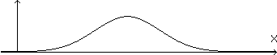
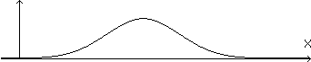
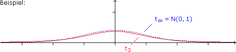

XVIII. MATHEMATISCHE STATISTIK
 Ergänzungen und Details
Ergänzungen und Details
Aufgabe 1: Fasse von der unten angegebenen Zufallsvariablen X erzeugte Zahlen zu 5er-Gruppen zusammen, überlege, wie deren Mittelwerte im Vergleich zu den Originalzahlen liegen, und skizziere demenstprechend die Glockenkurve der Mittelwerte X.


Offenbar streuen die Mittelwerte nach wie vor um den ursprünglichen Erwartungswert, aber nicht mehr so stark. D.h. die Flanken der Glocke sind steiler und die Haube liegt höher, da die Fläche unter Dichtefunktionen immer 1 ist:
In der mathematischen Statistik geht es darum, über eine Zufallsstichprobe vom Umfang n auf die Verteilung eines Merkmals X in einer großen Population zu schließen. Dazu wählen wir n-mal unabhängig voneinander einen Merkmalsträger aus und rechnen die auf dieses Gesamtexperiment aufsetzenden Zufallsvariablen
Xi = X-Wert der i-ten Ausführung
über diverse Formeln zu neuen Zufallsvariablen, den sogenannten Teststatistiken (Prüfgrößen), zusammen.
Das Stichprobenmittel
• X :=  Xi
Xi
1
n
n
i=1
ist ein Schätzer für den Erwartungswert von X, weil E(X) = μ und Var(X) =  0 (für n ∞).
0 (für n ∞).
σ2
n
0 (für n ∞).
Beweis:
E(X) = E
X1 + … + Xn
= E(X1) + … + E(Xn) = n = μ
1
n
1
n
1
n
1
n
μ
n
Var(X) = Var
X1 + … + Xn
= Var(X1) + … + Var(Xn) = n =
1
n
1
n
1
n2
1
n2
σ2
n2
σ2
n

Xi unabhängig
Die Stichprobenvarianz
• S2 := (Xi–X)2
1
n – 1
n
i=1
ist aus denselben Gründen ein Schätzer für die Varianz von X (n–1 ist der "Erwartungstreue" geschuldet, da die Formel X statt μ verwendet).
2 Verteilungen dazu
Streng genommen ist X eine diskrete Zufallsvariable, da jede Population endlich ist. Aber bei kontinuierlichen Merkmalen aus großen Populationen können wir X als stetig ansehen. Im Folgenden beschränken wir uns auf normalverteilte X und gehen von Teststatistiken aus, die auf den oben eingeführten Schätzern beruhen, aber deren Parameter herausrechnen (wodurch es weniger Verteilungen braucht):
• = N(0;1) verteilt
X – μ
σ/√n
• S2 = χ2n–1 verteilt
n – 1
σ2
•
X – μ
S/√n
Wobei die Chi-Quadrat-Verteilung und die (studentsche) t-Verteilung mit n Freiheitsgraden so definiert sind:
Zi=N(0;1) verteilt und unabhängig
 Z12+...+Zn2 =: χ2n verteilt
Z12+...+Zn2 =: χ2n verteiltZ=N(0;1) verteilt, Y=χ2n verteilt und unabhängig
Z
√Y/n

Die α-Quantile dieser Verteilungen kürzen wir so ab:
| P(X ≤ α) =: |
zα,X = N(0; 1) verteilt χ2n;α, X = χ2n verteilt tn;α,X = tn verteilt |
Von einer Zufallsvariablen X kennen wir die Art der Verteilung, aber zu einem ihrer Parameter gibt es nur eine Behauptung, die Nullhypothese H0. Je nachdem, inwieweit eine aus Stichprobenwerten errechnete Teststatistik in dieses "Weltbild" passt, sprechen wir entweder von einer zufälligen oder signifikanten Abweichung vom zu erwartenden Wert. Im ersten Fall wird die Nullhypothese beibehalten, im zweiten abgelehnt.
Signifikanz ergibt sich zum einen aus dem Signifikanzniveau α, das ist der (vorgegebene) Prozentsatz der als signifikant anzusehenden Extreme, also gewissermaßen die Revolutionsbereitschaft. Zum anderen aus der Alternativhypothese H1, die Extreme nur in einer Richtung oder in beide Richtungen signifikant macht.
einseitiger Test: H0:μ=μ0 gegen H1:μ>μ0 zweiseitiger Test: H0:μ=μ0 gegen H1:μ≠μ0

Im Hinblick auf die jeweilige Teststatistik ist der p-Wert einer Stichprobe das Signifikanzniveau, bei dem diese Stichprobe auf der Kippe zwischen Ablehnen/Beibehalten liegt. Der p-Wert ist also die Wahrscheinlichkeit, dass die Teststatistik (im behaupteten Weltbild) den beobachteten oder einen extremeren Wert annimmt:
p-Wert ≥ α
H0 beibehalten, sonst ablehnen2 Hypothese zu μ bei bekanntem σ (z-Test)
Aufgabe 2: Der Durchmesser eines Bauteils sei normalverteilt mit σ = 1,9 mm. a) Bestimme unter der Annahme, dass die Nullhypothese μ = 35 mm zutrifft, den um μ zentrierten 99%-Zufallsstreubereich für das Stichprobenmittel von 6er-Stichproben. b) Bewirkt eine 6er-Stichprobe mit Mittelwert 36,8 mm die Ablehnung/Beibehaltung der Nullhypothese (wenn auf dem 1%-Niveau getestet wird)? c) Wie groß ist der p-Wert der Stichprobe?
X = Durchmesser in mm = N(μ;1,9) verteilt
Getestet wird H0: μ = 35 gegen H1: μ ≠ 35
a) 0,99 = P
= P
z0,005 ≤ ≤ z0,995
X – μ
σ/√n
μ+z0,005 ≤ X ≤ μ+z0,995
σ
√n
σ
√n
99%-ZSB für X =
= [33,0; 37,0]
35–2,576 ; 35+2,576
1,9
√6
1,9
√6
b) 36,8
 ZSB H0 beibehalten
ZSB H0 beibehalten
c) = = 2,32
x – μ
σ/√n
36,8 – 35
1,9/√6
p-Wert = P
+ P
= 2Φ(–2,32) = 0,02 (> α)
–∞ < < –2,32
X – μ
σ/√n
2,32 < < ∞
X – μ
σ/√n
Exkurs: Bei Qualitätsregelkarten werden die Stichprobenmittel in bestimmten Zeitintervallen eingetragen. Sobald die "Eingriffsgrenzen" auf dem 1%-Niveau überschritten werden, ist die Maschine neu einzurichten. Wenn nur die "Warngrenzen" auf dem 5%-Niveau überschritten werden, wird beispielsweise das Zeitintervall verkürzt.
3 Hypothese zu μ bei unbekanntem σ (t-Test)
Aufgabe 3: Die (normalverteilte) Reißfähigkeit von Nylonschnüren soll durch eine Änderung im Herstellungsprozess verbessert werden. Bewirkt die folgende Stichprobe (alle Werte in kg) eine Ablehnung/Beibehaltung der Nullhypothese μ ≤ 50 kg, wenn das Signifikanzniveau α = 5% ist?
48,4 46,5 54,7 51,5 49,8 54,3 56,7 55,1 54,1 51,3
48,4 46,5 54,7 51,5 49,8 54,3 56,7 55,1 54,1 51,3
X = Reißfestigkeit in kg = N(μ;σ) verteilt
Stichprobe x = xi = 52,24 und s2 = (xi–x)2 = 3,282
x = 1
n
n
i=1
1
n – 1
n
i=1
Getestet wird H0: μ = 50 gegen H1: μ > 50, d.h. nur extrem große Werte der Teststatistik
X – μ
S/√n
sind signifikant (extrem kleine Werte wären unter H1 ja noch extremer).
Lösungsvariante 1: über ZSB
0,95 = P
–∞ < ≤ tn–1;0,95
X – μ
S/√n
95%-ZSB für = ]–∞; 1,83]
X – μ
S/√n
x – μ
s/√n
52,24 – 50
3,28/√10
 ZSB H0 ablehnen
ZSB H0 ablehnen
Lösungsvariante 2: über p-Wert
p-Wert = P
= 1–T9(2,16) = 0,03 < α H0 ablehnen
2,16 ≤ < ∞
X – μ
S/√n
H0 ablehnen
Bem: Auf den ersten Blick mag verwundern, warum man das Gegenteil von dem, was man zeigen will, zur Nullhypothese macht. Der Grund ist, dass die Ablehnung der Nullhypothese eine starke Aussage ist, weil deren Fehlerwahrscheinlichkeit gering ist – nämlich α. Dagegen ist die Beibehaltung der Nullhypothese eine schwache Aussage, solange ihre Fehlerwahrscheinlichkeit unbekannt ist.
4 Hypothese zu relativem Anteil p
Aufgabe 4: Bei einer großen Tombola wird versprochen, dass höchstens 40% der Lose Nieten sind. Jemand kauft 250 Lose, um die Behauptung auf dem 1%-Niveau zu testen. Bestimme näherungsweise über die Normalverteilung, wie viel Nieten darunter sein dürfen.
| X· = Niete? |

|
1 = ja (Wahrscheinlichkeit p) 0 = nein (Wahrscheinlichkeit q) |
X = X·1 + … + X·n (Anzahl Nieten) = n-p-binomialverteilt ≈ N(np;√npq) verteilt
Getestet wird H0: p = 0,40 (μ = 100) gegen H1: p > 0,40 (μ > 100)
0,99 = P
= P(–∞ < X ≤ np+z0,99√npq)
–∞ < ≤ z0,99
X – np
√npq
99%-ZSB für X = [–∞; 250·0,40+2,326√250·0,40·0,60] = [–∞; 118]
5 Fehler bei statistischen Tests
• α-Fehler (Fehler 1. Art) := fälschliche Ablehnung der Nullhypothese
• β-Fehler (Fehler 2. Art) := fälschliche Beibehaltung der Nullhypothese
Die Wahrscheinlichkeit α für einen Fehler 1. Art ("Irrtumswahrscheinlichkeit") ist gerade das Signifikanzniveau. Die Wahrscheinlichkeit β für einen Fehler 2. Art ist nur im Hinblick auf eine punktuelle Alternativhypothese bestimmbar, die Gegenwahrscheinlichkeit 1–β heißt Power des Tests.
Aufgabe 5: Die Urinproduktion pro Tag sei normalverteilt mit μ0 = 1200 ml und σ = 330 ml und soll durch ein neues Medikament auf μ1 = 1450 ml erhöht werden. Wie groß muss der Stichprobenumfang sein, um die Nullhypothese, dass das Medikament keine Erhöhung bewirkt, gegen die Forschungshypothese mit α = 5% und β = 10% zu testen.
Je größer der Stichprobenumfang n, umso geringer der β-Fehler, weil sich der unter H0 ermittelte ZSB von μ1 wegbewegt und über diesem Bereich die unter H1 gültige Wahrscheinlichkeitsdichte absackt.
X = Urinpoduktion im ml = N(μ;330) verteilt
Schritt 1: Getestet wird H0: μ = μ0 gegen H1: μ > μ0
0,95 = P
= P(–∞ < X ≤ μ0+z0,95 σ/√n)
–∞ < ≤ z0,95
X – μ0
σ/√n
Schritt 2: Wechsel des Weltbildes zu H1: μ = μ1
0,10 = P
= Φ
+ z0,95
– Φ(–∞) Φ–1(.)
–∞ < ≤
X – μ1
σ/√n
μ0+z0,95 σ/√n – μ1
σ/√n
μ0 – μ1
σ/√n
–1,282 = √n + 1,645 n = 15
1200 – 1450
330
n = 15Ein ein/zweiseitig abgegrenztes (1–α)-Konfidenzintervall (Vertrauensbereich) wird von einer ein/zweidimensionalen Zufallsvariablen realisiert, die aus jeder Stichprobe die Grenzen eines Intervalls errechnet, das den wahren Wert des Parameters mit der Wahrscheinlichkeit 1–α überdeckt. Diese Wahrscheinlichkeit heißt auch Konfidenzniveau (Vertrauensniveau).
Beachte, dass die Grenzen drehen, wenn wir in unseren Teststatistiken den Parameter (Subtrahend/Divisor) freistellen. Bei einseitig abgegrenzten Konfidenzintervallen lassen wir daher die Teststatisik auf der anderen Seite ins Unendliche laufen.
2 Konfidenzintervall für μ bei bekanntem σ (z-Intervall)
Aufgabe 6: Die Fettgehalt einer Käsesorte ist normalverteilt mit σ = 1,5%. Bestimme das einseitig nach oben abgegrenzte 95%-Konfidenzintervall für den Erwartungswert anhand der folgenden 8er-Stichprobe (alle Werte in %):
13,1 11,2 11,5 11,3 11,4 11,0 8,4 10,1
13,1 11,2 11,5 11,3 11,4 11,0 8,4 10,1
X = Fettgehalt in % = N(μ;1,5) verteilt
Stichprobe x = xi = 11
x = 1
n
n
i=1
0,95 = P
= P
z0,05 ≤ < ∞
X – μ
σ/√n
–∞ < μ ≤ X–z0,05
σ
√n
95%-KI für μ =
= ]–∞; 11,9]
–∞; 11+1,645
1,5
√8
3 Konfidenzintervall für μ bei unbekanntem σ (t-Intervall)
In der Messtechnik wird als Konfidenzniveau gern die Wahrscheinlichkeit, dass X im Bereich μ ± tσ liegt, verwendet:
| P(μ – tσ ≤ X ≤ μ + tσ) = |
68,3% = Φ(1)–Φ(–1), t = 1 95,4% = Φ(2)–Φ(–2), t = 2 99,7% = Φ(3)–Φ(–3), t = 3 |
Aufgabe 7: Die Zeitmessung bei einem unter gleichen Bedingungen wiederholten physikalischen Experiment streue normalverteilt um den wahren Wert. Bestimme das 68,3%-Konfidenzintervall für den wahren Wert anhand der folgenden 5 Messergebnisse (alle Werte in ms):
239 242 255 249 250
239 242 255 249 250
X = gemessene Zeit in ms = N(μ;σ) verteilt
Stichprobe x = xi = 247 und s2 = (xi–x)2 = 6,442
x = 1
n
n
i=1
1
n – 1
n
i=1
0,683 = P
= P
tn–1;0,159 ≤ ≤ tn–1;0,841
X – μ
S/√n
X–tn–1;0,841 ≤ μ ≤ X–tn–1;0,159
S
√n
S
√n
68,3%-KI für μ =
= [243,7; 250,3]
247–1,140 ; 247+1,140
6,44
√5
6,44
√5
4 Konfidenzintervall für σ2 bei unbekanntem μ
Aufgabe 8: Der Wert von Metalloxidwiderständen, die zu einer Produktionsserie gehören, sei normalverteilt. Bestimme das 99%-Konfidenzintervall für die Varianz anhand der folgenden 10er-Stichprobe (alle Werte in Ω):
978 966 976 952 915 1002 994 1028 1102 1040
978 966 976 952 915 1002 994 1028 1102 1040
X = Widerstand in Ω = N(μ;σ) verteilt
Stichprobe x = xi = 995,3 und s2 = (xi–x)2 = 522
x = 1
n
n
i=1
1
n – 1
n
i=1
0,99 = P
= P
S2 ≤ σ2 ≤ S2
χ2n–1;0,005 ≤ S2 ≤ χ2n–1;0,995
n – 1
σ2
n – 1
χ2n–1;0,995
n – 1
χ2n–1;0,005
99%-KI für σ2 =
522; 522
= [32,12; 118,42]
9
23,59
9
1,735
5 Konfidenzintervall für relativen Anteil p
Aufgabe 9: Bei einer Umfrage sprechen sich 162 von 600 zufällig ausgewählten Personen für eine bestimmte Partei aus. Bestimme näherungsweise über die Normalverteilung das 90%-Konfidenzintervall für den Stimmenanteil, den die Partei bei einer Wahl erzielen würde.
| X· = Parteiwähler? |
|
1 = ja (Wahrscheinlichkeit p) 0 = nein (Wahrscheinlichkeit q) |
X = X·1 + … + X·n (Anzahl Parteiwähler) = n-p-binomialverteilt ≈ N(np;√npq) verteilt
0,90 = P
= P
– √npq ≤ p ≤ – √npq
z0,05 ≤ ≤ z0,95
X – np
√npq
X
n
z0,95
n
X
n
z0,05
n
Statt p tatsächlich freizustellen (was aufwendig ist), schätzen wir p unter der Wurzel als X/n ab:
90%-KI für p =
= [0,24; 0,30]
0,27– √600·0,27·0,73; 0,27+ √600·0,27·0,73
1,645
600
1,645
600